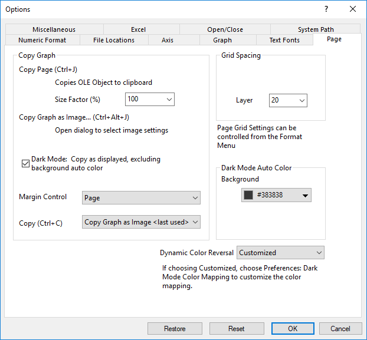

Die Registerkarte Seite (Optionen)
Options-Dialog-Page-Tab
- 
Gruppe Seiteneinstellungen kopieren
Diese Gruppe steuert primär das Bild, das beim Verwenden des Menübefehls Bearbeiten: Seite kopieren / Bearbeiten: Diagramm als Bild kopieren in einem Diagrammfenster oder auf einer Layoutseite in die Zwischenablage kopiert wurde. Einige der Einstellungen (Größenfaktor, Randeinstellung) betreffen auch die Standardeinstellungen zum Exportieren von Diagrammen. Der Dialog für den Grafikexport bietet jedoch einen einfachen Weg, Standardwerte zu überschreiben und benutzerdefinierte Einstellungen, basierend auf einer Designdatei, zu verwenden.
Seite kopieren
(Strg+J) |
Kopiert das OLE-Objekt (Object Linking and Embedding) in die Zwischenablage.
- Steuert die Größe der Seite. Die Einheiten sind ein Prozentsatz der ursprünglichen Seitengröße (auf 40 für 40 % gesetzt usw.) Dieses Standardverhältnis ist 100 %. Bitte beachten Sie, wenn Sie die Seite kopieren und in einer andere Anwendung wie MS Word einfügen, dass die Seite womöglich während des Einfügens bei Übergröße herunterskaliert wird, einer Regel von Word entsprechend.
|
Diagramm als Bild kopieren...
(Strg+Alt+J) |
Öffnet den Dialog zum Auswählen der Bildeinstellungen. |
| Randeinstellungen |
Dieser Wert steuert die Menge der Diagrammseite, die kopiert/exportiert wird. Die Diagrammseite wird durch den Bereich identifiziert, der standardmäßig der weiße Hintergrund Ihrer Grafik ist. Der Umfang, d. h. das "Begrenzungsfeld", das in den Modi Rand und Fest verwendet wird, ist seitenspezifisch.
-
- Rand: Wählen Sie Rand aus, um die Seite innerhalb der Umrandung zu kopieren und zusätzlich den Rahmen hinzuzufügen, der in der Auswahlliste Rahmenstärke angegeben ist. Die Umrandung umfasst alle Objekte, die außerhalb der Grafikseite liegen.
-
- Eng: Die Seite innerhalb der Umrandung wird kopiert/exportiert. Diese Option unterscheidet sich von Eng in Seite dadurch, dass die Umrandung so gezeichnet wird, dass Objekte außerhalb der Grafikseite eingeschlossen werden.
-
- Seite: Die gesamte Seite im Grafikfenster wird kopiert/exportiert (der weiße Bereich).
-
- Eng in Seite: Es wird ein festes Begrenzungsfeld um alle Elemente herum verwendet, die sich vollständig/mehr als 50 % innerhalb der Diagrammseite befinden.
_Page_Tab/Tip_icon.png) |
Gelegentlich existiert ein Objekt außerhalb der Diagrammseite (beispielsweise ein Textobjekt, das erstellt, aus der Seite gezogen und dann vergessen wurde). Wenn der Umfang auf Rand oder Eng gesetzt ist, zeichnet Origin die Umrandung um alle Objekte in der Grafik, inklusive der ungesehenen Objekte, die sich eventuell außerhalb der Seite befinden. Dies ruft den Schrumpfeffekt des exportierten Diagramms hervor. Wenn Sie Ihre Grafik kopieren und in eine andere Anwendung einfügen und die eingefügte Grafik viel kleiner aussieht, als sie sollte, versuchen Sie unter Umfang die Einstellung Eng in Seite, speichern Sie die Option und kopieren und fügen Sie Ihre Grafik erneut ein.
|
†Hinweis: Ab Origin 2018 können Sie sowohl (1) das Begrenzungsfeld anzeigen und (2) die Größe des Begrenzungsfeld beeinflussen. Das tun Sie über den Dialog Randverschiebung für Export.
|
| Kopieren (Strg+C) |
Per Standard wird durch Verwenden der Tasten Strg + C zum Kopieren des Diagramms das Diagramms als Bild kopiert. In dieser Downloadliste können Sie die Tastenkombination in Seite kopieren ändern. |
Gruppe Gitterabstand in Pixeln
| Layer |
Geben Sie den gewünschten Wert ein oder wählen Sie ihn im Auswahlfeld aus, um den Abstand der Layergitternetzlinien festzulegen. Die Einheit des Abstands ist 1/500 des Layers.
|
Hinweis: Um die Gitternetzlinien anzuzeigen, wählen Sie Ansicht: Zeigen: Layergitternetz oder klicken Sie auf die Schaltfläche Gitternetze zeigen _Page_Tab/Popup_Show_Grids.png) auf der Minisymbolleiste der Diagrammseite. auf der Minisymbolleiste der Diagrammseite. |
Automatische Farbe für Dunkelmodus
Legen Sie global die Farben für Hintergrund und Vordergrund des Diagramms und Layouts fest, wenn das Fenster sich im Dunkelmodus befindet. Wenn Sie in den Dunkelmodus schalten, ändern sich die Farben für Hintergrund und Vordergrund in diese festgelegten Farben.
Wenn die Hintergrundfarbe der Seite auf der Registerkarte Anzeige im Dialog Details Zeichnung benutzerdefiniert angepasst wird, folgt sie der Einstellung im Dialog Details Zeichnung mit Priorität.
Dynamische Farbumkehrung
Wenn sich das Diagrammfenster im Dunkelmodus befindet, wird die Farbe der Zeichnungen und Objekte im Diagramm umgekehrt. Sie können dieses Bedienelement verwenden, um zu entscheiden, ob die Farbe bei aktiviertem Dunkelmodus umgekehrt werden soll. Diese Option entspricht der Systemvariable @DCR.
- Kein: Die Farbumkehrung ist deaktiviert.
- Nur Schwarz: Nur Schwarz wird umgekehrt.
- Schwarzweiß: Nur Schwarzweiß wird umgekehrt.
- Graue Farben: Alle grauen Farben werden umgekehrt.
- Alle Farben: Alle Farben werden umgekehrt.
- Benutzerdefiniert: Es wird der Farbliste im Arbeitsblatt Farbabbildung des Dunkelmodus gefolgt.
Bei Auswahl von Benutzerdefiniert klicken Sie auf Einstellungen: Farbabbildung des Dunkelmodus, um die Farbabbildung benutzerdefiniert anzupassen.
Bei Auswahl von Nur Schwarz wird das Bedienelement gezeigt, das zur Vordergrundfarbe gehört.
Hinweis: Wenn Sie die Farbabbildung in der Zeichnung verwenden, wird die Farbe nicht in jeder Situation umgekehrt.